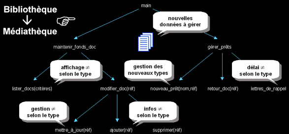

|
|
|
Approche fonctionnelle vs. approche objet
q
La découpe fonctionnelle d'un problème informatique : une approche intuitive
Exemple de découpe fonctionnelle d'un logiciel dédié à la gestion d'une bibliothèque :
Le logiciel est composé d'une hiérarchie de fonctions, qui ensemble, fournissent les services désirés, ainsi que de données qui représentent les éléments manipulés (livres, etc…). Logique, cohérent et intuitif.
q Le "plus" de l'approche fonctionnelle : la factorisation des comportements
Une découpe fonctionnelle "intelligente" consiste à factoriser certains comportements communs du logiciel. En d'autres termes : pour réaliser une fonction du logiciel, on peut utiliser un ensemble d'autres fonctions, déjà disponibles, pour peu qu'on rende ces dernières un tant soit peu génériques. Génial !
q Le revers de la médaille : maintenance complexe en cas d'évolution
Factoriser les comportements n'a malheureusement pas que des avantages. Les fonctions sont devenues interdépendantes : une simple mise à jour du logiciel à un point donné, peut impacter en cascade une multitude d'autres fonctions. On peut minorer cet impact, pour peu qu'on utilise des fonctions plus génériques et des structures de données ouvertes. Mais respecter ces contraintes rend l'écriture du logiciel et sa maintenance plus complexe.
En cas d'évolution majeure du logiciel (passage de la gestion d'une bibliothèque à celle d'une médiathèque par exemple), le scénario est encore pire. Même si la structure générale du logiciel reste valide, la multiplication des points de maintenance, engendrée par le chaînage des fonctions, rend l'adaptation très laborieuse. Le logiciel doit être retouché dans sa globalité :

|
|
|